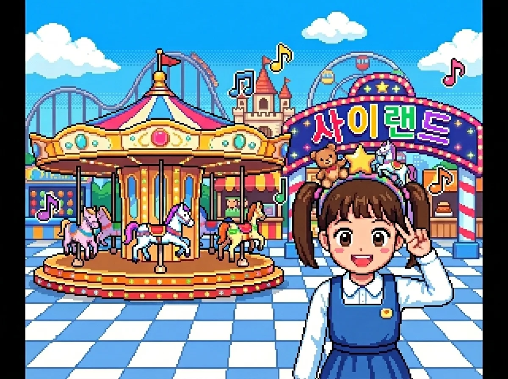
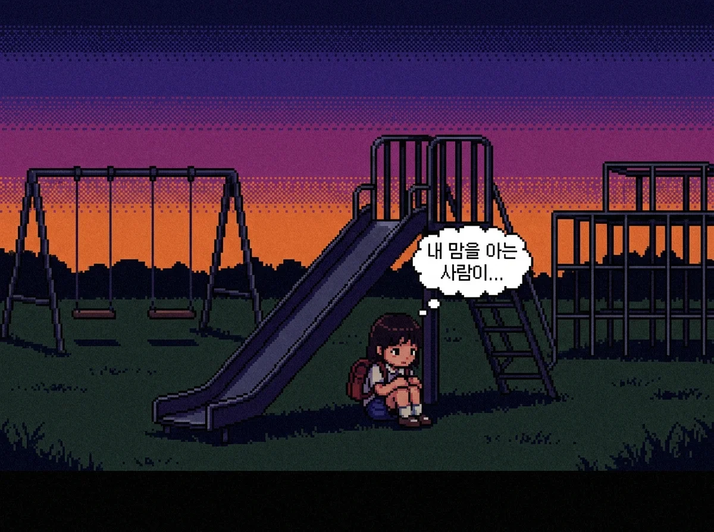

사이버 자기존중감
1
2
사이버 자기존중감

SNS 속 화려한 친구들의 모습을 보며 어쩐지 내 모습이 초라하게 느껴진 적 있어? 네모난 화면 속 모습이 전부는 아니니 나를 아끼고 존중하는 마음이 필요해.
활동 1
SNS 사진 의미를 분석하고 나만의 소확행 해시태그 완성하기
활동 2
힘들어하는 친구에게 위로의 댓글을 선물하고 반 친구들과 함께 응원하기
질문 해결을 통해 마음을 성찰해 보세요.
질문 1/2
마음온 AI 가이드
친구의 화려한 SNS 사진을 보았을 때, 내 마음을 지키는 올바른 대처 방법은 무엇일까?
마음그램
지은

그림을 넣어주세요!
theme_park_jieun.webp
❤️ 좋아요 42개
지은 주말 테마파크 완전 꿀잼! 대기 줄 길었지만 머리띠 사고 신났음 🎡 Rollercoaster! #행복 #꿀잼
마음그램
나
비어 있음
나만의 행복을 등록해 주세요!
이유
❤️ 좋아요 0개
나 (아직 등록된 이야기가 없습니다)
질문 텍스트
질문 텍스트
1. 나의 소확행 내용:
2. 해시태그 (스페이스바 입력 시 # 자동):
3. 나만의 '좋아요' 스티커 이름:
지수의 우울한 피드에 위로의 댓글을 선물하세요.
긍정 에너지 나누기
마음온 AI 가이드
내가 힘들 때 듣고 싶었던 따뜻한 위로의 말을 친구에게 댓글로 선물해 보자!

그림을 넣어주세요!
lonely_jisu.webp
지수: 요즘 내 맘을 아는 사람이 아무도 없는 것 같아... 😔
💬 댓글 피드
내가 힘들 때 듣고 싶었던 따뜻한 위로의 말을 친구에게 선물해 볼까?
사이버 자기존중감 활동 완료 🌟

인터넷 공간 속 수많은 글과 말들 사이에서도 흔들리지 않고 스스로를 아끼고 보호하는 너의 모습이 정말 멋지단다. 언제 어디서든 너의 가치는 가장 반짝이고 소중하다는 사실을 늘 마음에 기억하렴!